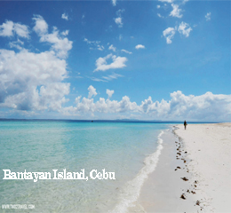

Is a province of the Philippines located in the Central Visayas (Region VII) region, and consisting of a main island and 167 surrounding islands and islets. Its capital is Cebu City, the oldest city and first capital of the Philippines, which is politically independent from the provincial government.
Tourist Destination
Boracay, Aklan
Boracay Island and its beaches have received awards from numerous travel publications and agencies.You may have seen too much of Boracay, but the islands white sand beaches: White Beach, Diniwid, and Puka, just to name a few, are still some of the most beautiful in the country. The view of the islands paraws gliding along its waters is second only to the fiery ball of orange that is the renowned Boracay sunset.
Isla De Gigantes, Iloilo
It takes a rough sea crossing to get to Isla De Gigantes, but these islands in Iloilo province make the trip worth it. Towering craggy cliffs and dreamy sandbars make these islands one of the most picturesque places in Panay, and in the entire Visayas.
Explore VISAYAS
The Ruins, Negros Occidental
Romantic even in broad daylight but utterly magical by dusk, The Ruins may just be the most beautiful skeleton you will ever lay eyes on. Remnants of a sugar baron's house, which was constructed for his wife, the ornate Italianate-style building stands in the middle of a well kept lawn and is a must-visit spot when you're visiting nearby Bacolod City.
Siquijor
Stunning beaches are one thing; looking at them from the top of a 50-foot drop is another. In the tiny island of Siquijor, intrepid travelers jump off cliffs into the island's clear, welcoming waters. If Salagdoong Beach's vibrant turquoise does not entice you enough to either take the plunge or keep clicking, jump on a motorbike and drive around the tiny island, visiting Lazi's Cambugahay Falls and 400-year-old balete tree.

Bantayan Island, Cebu
Bantayan Island, off the northern coast of Cebu, is a sleepy island with scenic tree-lined roads and white-sand beaches. Among those heavily damaged by Typhoon Yolanda in November 2013, the island, like many others in the typhoon's path, is in the process of rebuilding.
Chocolate Hills, Bohol
The Chocolate Hills is a famous tourist attraction of Bohol. There are at least 1,260 hills but there may be as many as 1,776 hills spread over an area of more than 50 square kilometres (20 sq mi).[2] They are covered in green grass that turns brown (like chocolate) during the dry season, hence the name.